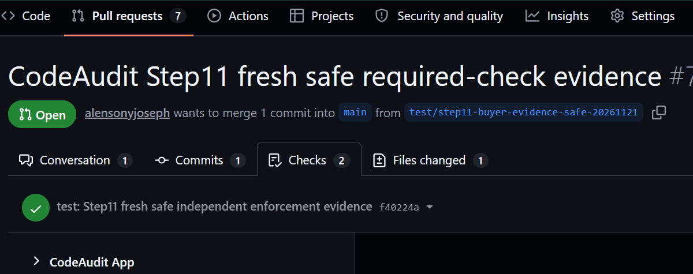

PR #7
Fresh supported safe change. CodeAudit App's required check succeeded on the exact head revision. PR stayed open.
Check 137027267846
GitHub App 3678682
GitHub App 3678682
AI can propose code faster than teams can trust it. CodeAudit investigates whether an exact change satisfies declared requirements, then lets GitHub enforce the resulting protected check.
No login. No card. No software installation. No input sent to a server.
Try a synthetic authorization fixture in your browser. This public replay illustrates already-tested outcomes without exposing the private verifier.
The selected revision preserves both the owner's required safety property and intended functionality.
This tiny, deliberately public decision table is evaluated locally in your browser. It is not the proprietary verifier, source adapter or protected-check signing system.
Candidate policy output for a read operation. Modify one or more outcomes, then ask the public micro harness for a counterexample.
One click is enough to introduce a meaningful security or availability regression.
Below are records captured through the owner's authenticated GitHub API. The repository is private; the public demo provides only sanitized metadata.
Fresh supported safe change. CodeAudit App's required check succeeded on the exact head revision. PR stayed open.
Fresh deliberately defective change. The required check refused it and GitHub reported BLOCKED. PR stayed open.
Earlier valid change passed its protected check and was actually merged. That historical result cannot authorize a new revision.
A buyer can assess the result without receiving the verification method. A deeper, buyer-selected technical evaluation is distinct from this public preview.
This public walkthrough is available immediately. A serious hands-on evaluation can follow a scoped agreement without exposing intellectual property in the first contact.
Use this URL anonymously. No registration, password, payment method or shared bypass link.
Try safe, defective, policy-tamper and unsupported cases. Inspect recorded pilot references and the boundary of the public replay.
Agree a buyer-selected in-scope case. Inspect the actual verifier and protected results under appropriate confidentiality and access controls.
Cost design: static HTML, CSS and JavaScript only. No backend calls, paid API, database, AI inference or payment processing. No visitor-triggered metered computation. Host-provided traffic quotas still apply.
The images below are captured from the actual CodeAudit GitHub App Checks tab. The left shows an allowed change qualified in the protected private sandbox. The right shows a deliberate regression stopped. These outcomes are not a simulated browser UI.

PR #7, exact App-owned required check SUCCESS. PR remains open. This is not an actual merge.

PR #8, exact App-owned required check FAILURE, merge blocked. This is the expected safe outcome for a defective change.
The protected verifier in these captures was tested on a bounded finite TypeScript pilot. An independent GitHub App installation on a new repository currently provides advisory screening, not this protected result.